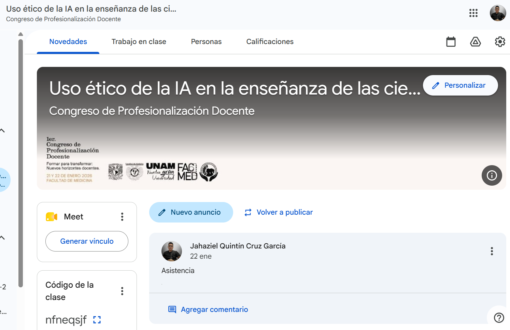
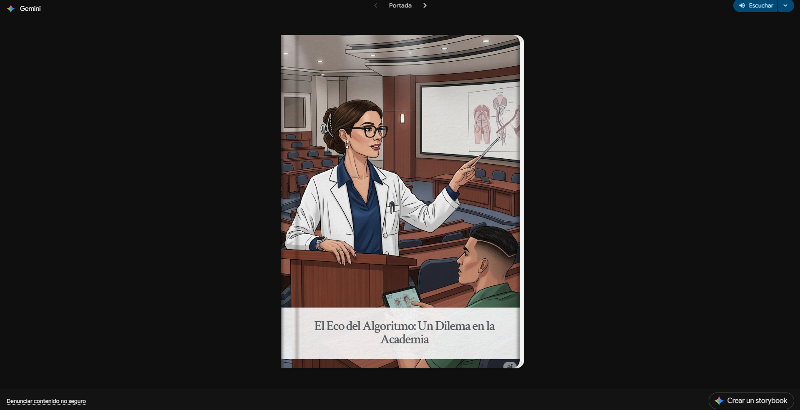
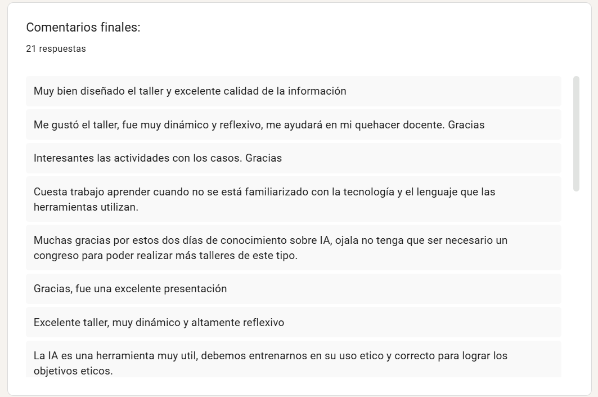

← Actividades académicas · Expediente 01/07
Ética de la IA
Taller presencial con actividades asincrónicas en aula virtual, impartido en el 1er Congreso de Profesionalización Docente de la Facultad de Medicina.
Mi rol Diseñé e impartí el taller y gestioné su aula virtual en Google Classroom.
- Tipo
- Taller presencial + aula virtual
- Marco
- 1er Congreso de Profesionalización Docente
- Plataforma
- Google Classroom
- Año
- 2026
Difusión
La convocatoria se difundió con piezas gráficas diseñadas en Canva dentro de la campaña del 1er Congreso de Profesionalización Docente, «Formar para transformar: nuevos horizontes docentes».

Implementación
Modalidad presencial con seguimiento asincrónico en un aula virtual de Google Classroom, «Uso ético de la IA en la enseñanza de las ciencias de la salud».

Recursos educativos

Material complementario del taller:
Evaluación / eficiencia terminal
- 21
- Respuestas de satisfacción
